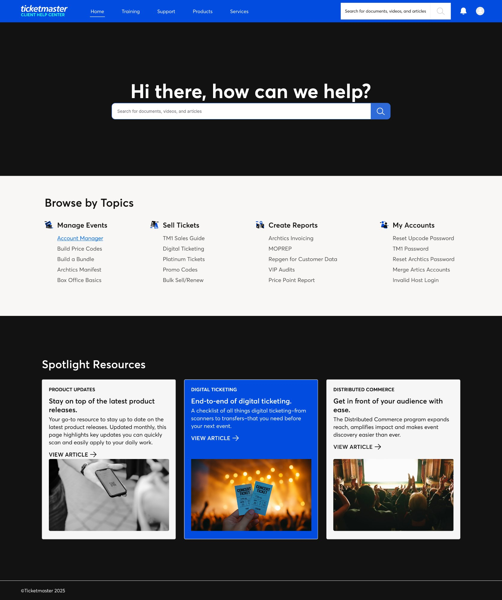
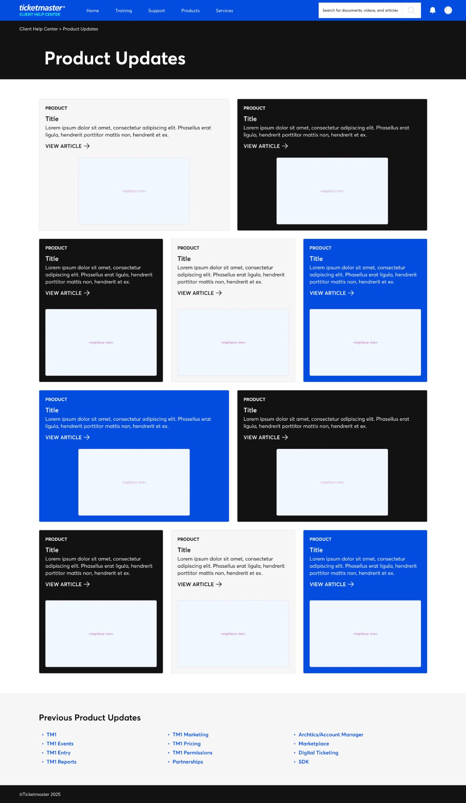
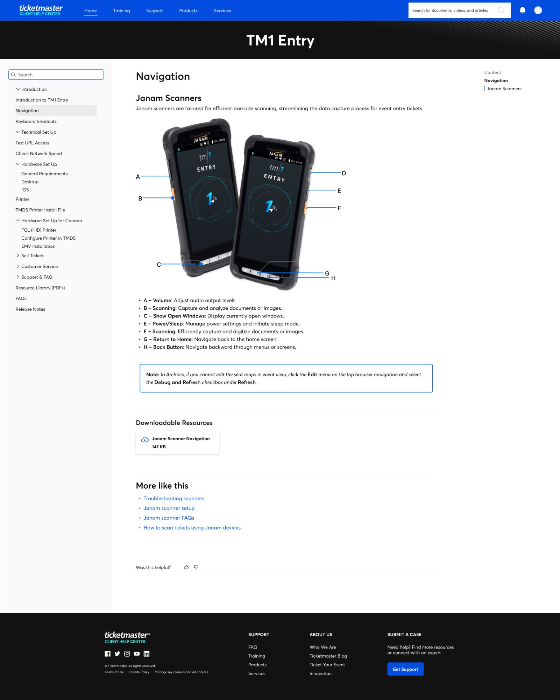
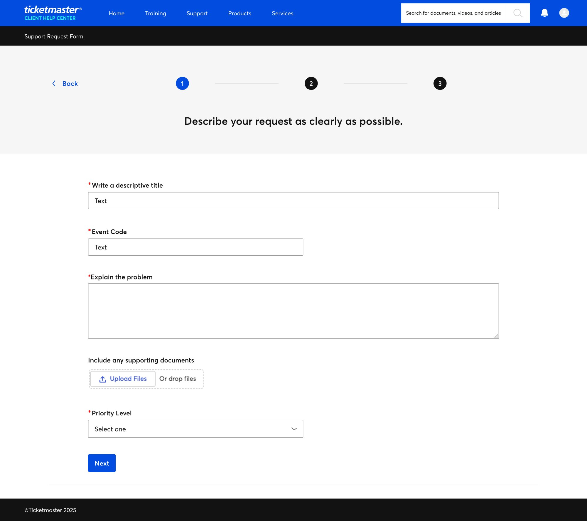
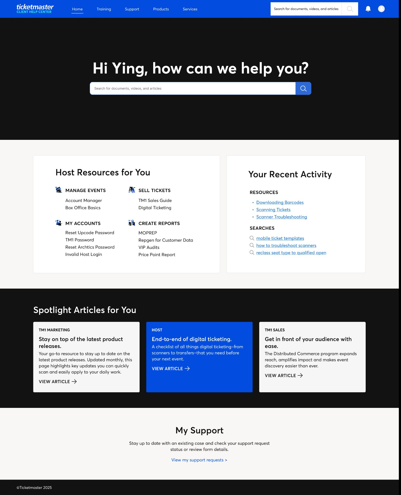
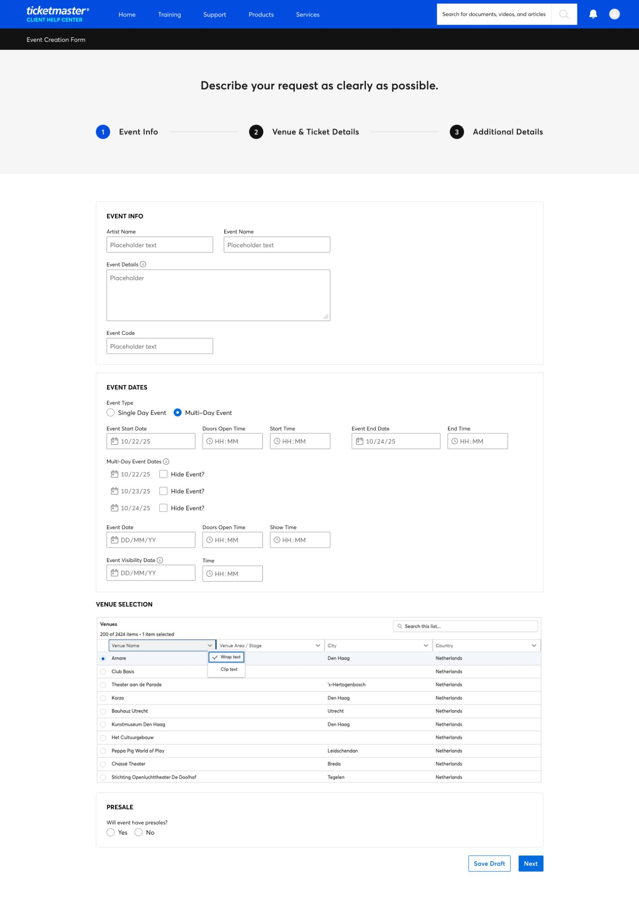
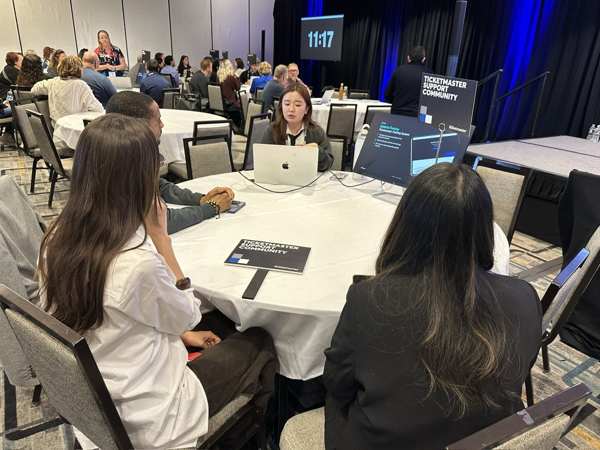
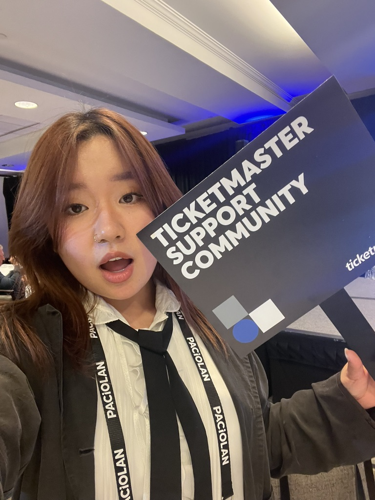
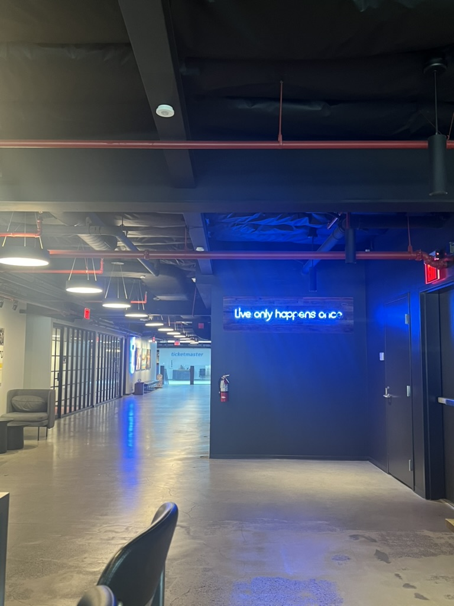
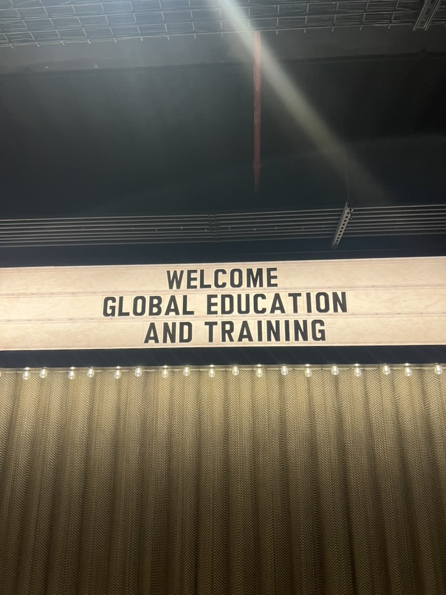

The Problem
Ticketmaster's Global Education team supports clients across 14 markets — from first-time venue managers to enterprise promoters running hundreds of events. Their B2B support platform was the primary touchpoint, but it wasn't keeping up: navigation was fragmented, content was hard to find, and clients defaulted to opening support tickets for answers that should have been self-serve.
I joined as the sole product designer to evolve this platform from a basic help center into a scalable learning and self-service hub.
How might we design a platform that helps clients learn and solve problems on their own — scaling education across markets without scaling headcount?
Scope
Over two years, I partnered with PMs, content strategists, and regional education leads across six workstreams. I owned the end-to-end design for each — from discovery and research through to high-fidelity prototypes, stakeholder reviews, and developer handoff.
Day to day, that meant facilitating design critiques with PMs, running card sorts and tree tests for navigation, synthesizing Domo analytics to identify content gaps, and iterating on Figma prototypes validated through Maze usability studies.
Because this work touches internal tools and client data, the full details live in an NDA-protected deck. This page focuses on the shape of the work and the problems I owned.
Projects

01
Onboarding Journey
Designed the first-time client setup flow from scratch, reducing time-to-confidence for new users.

02
Product Updates
Created a system for surfacing platform changes so clients stay informed without opening tickets.

03
Product Guide
Designed task-based content architecture that lets clients self-serve without guessing where to look.

04
Support Form
Streamlined the ticket submission flow to reduce friction and capture the right information upfront.

05
AI Personalization
Explored AI-driven content recommendations tailored to each client's product usage and behavior.

06
Event Creation Form
Redesigned a complex multi-step form used by operators building events at scale across markets.
Impact Snapshot
14
global markets served by one unified content and navigation system
6
design workstreams owned end-to-end from research through handoff
↓
reduced time-to-answer for clients through improved search and self-service flows
On the Ground




Full Case Study
Takeaway
What I learned
The best outcome wasn't a single feature — it was infrastructure. Designing navigation, content, and search as a connected system meant every new article, every new market, made the platform better instead of more complex.
This project taught me how to balance long-range systems thinking with the day-to-day realities of shipping in a cross-functional team — aligning with PMs on scope, making trade-offs when timelines compressed, and building trust with stakeholders by showing work early and often.